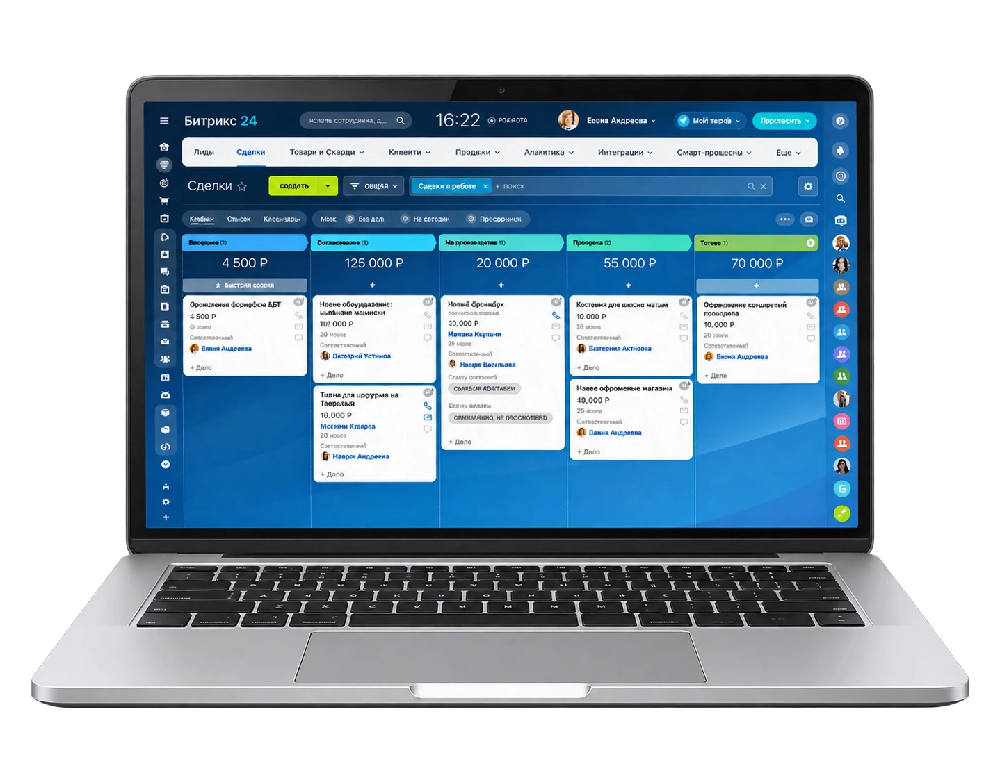
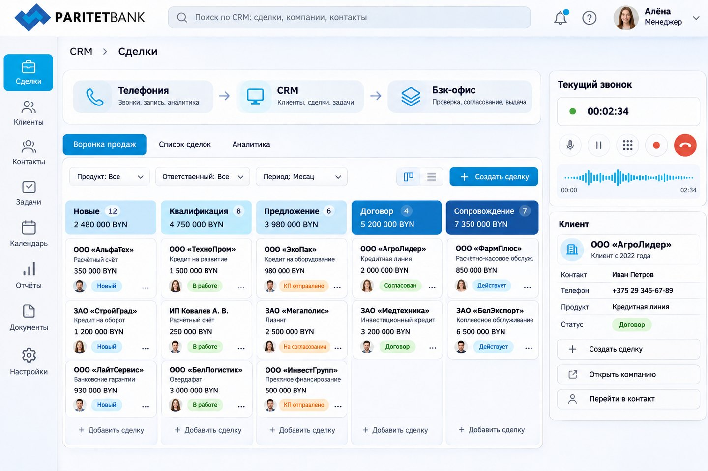
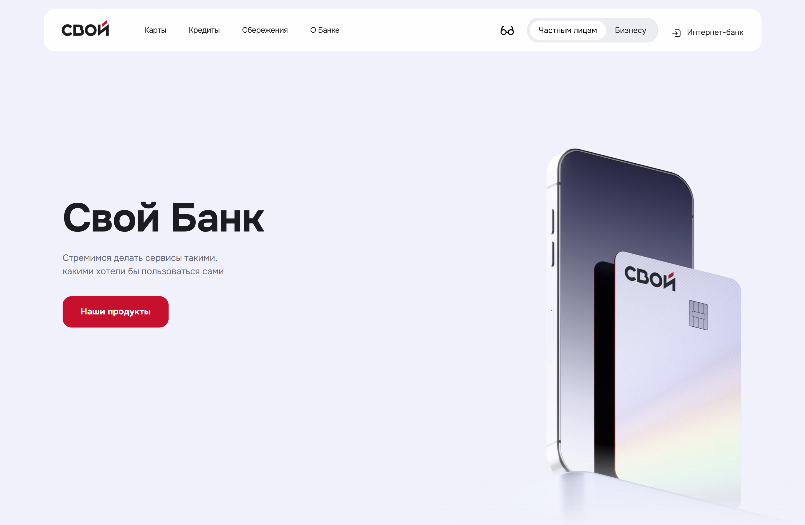
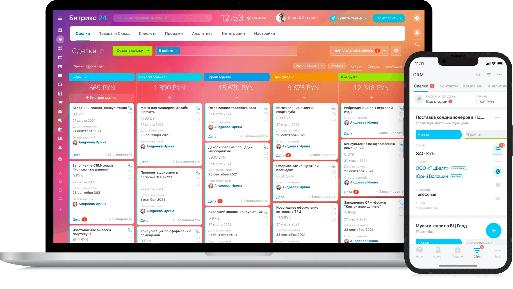
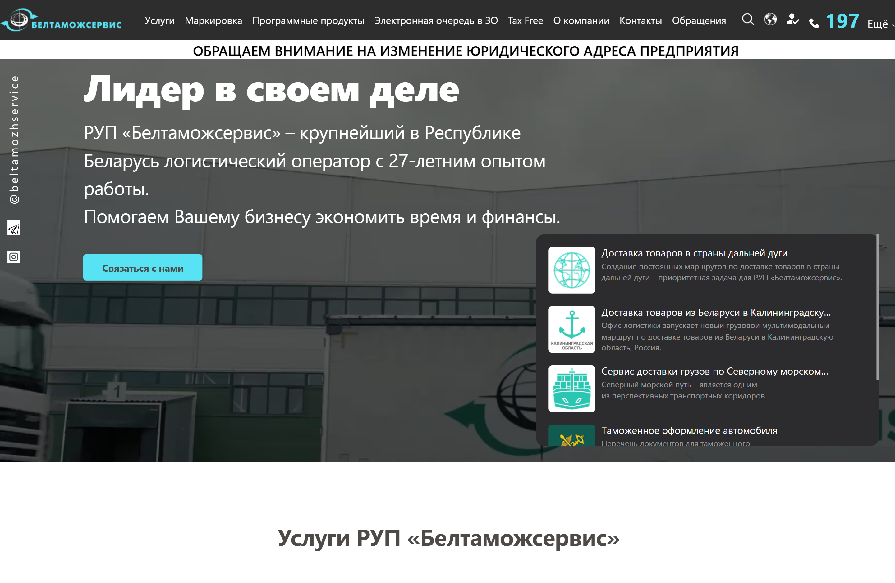
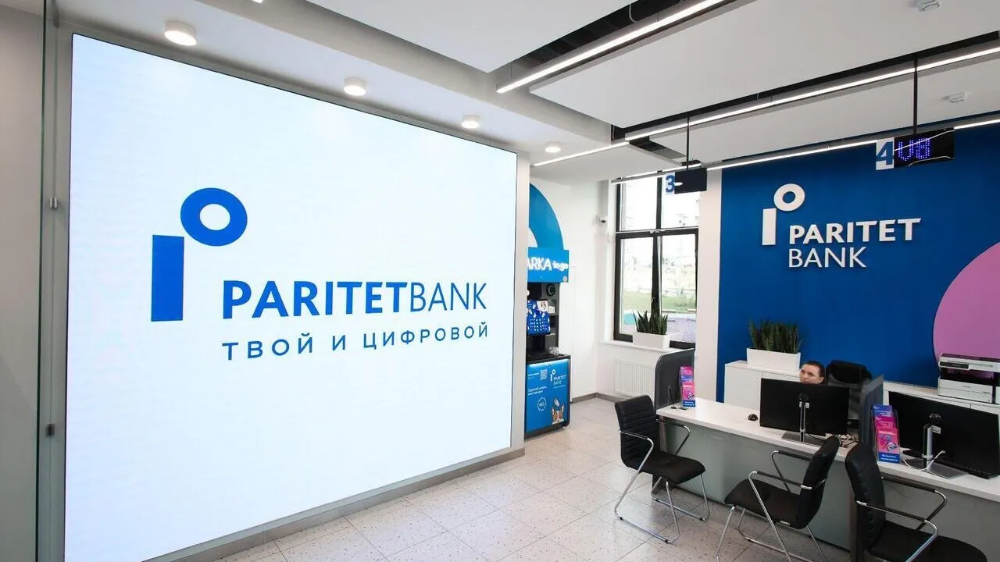

Автоматизация бизнес-процессов в Битрикс24
Настраиваем роботов, бизнес-процессы и умные сценарии: от обработки лида до согласования документов. Меньше рутины — быстрее сделки.

-
от 60 000 ₽
стоимость автоматизации процесса
-
от 2
недель настройка первого процесса
-
ТОП-3
партнёров Битрикс24 в Беларуси


Люди должны думать, а не перекладывать данные. Роботы Битрикс24 берут на себя однотипные письма, напоминания, согласования и контроль этапов — менеджер занимается клиентом, а не рутиной. Мы проектируем процессы под вашу логику продаж и внедряем их так, чтобы команде было удобно ими пользоваться каждый день.
Проблемы, которые решаем
-
Рутина
Менеджеры тратят время на однотипные письма и напоминания
-
Согласование
Документы идут на подпись днями
-
Потери
Сделки зависают без напоминаний и контроля этапов
-
Ошибки
При ручной обработке заявок ошибаются в данных и ценах
-
Скорость
Лиду отвечают через часы, а не минуты — клиент уходит
-
Прозрачность
Непонятно, кто и за что отвечает на каждом этапе
Кейсы автоматизации
-
Паритетбанк автоматизация B2B-направления

-
Свой Банк автоматизация документооборота

-
HR-процессы автоматизация кадровых процессов в Битрикс24

-
Белтаможсервис автоматизация обработки обращений на CRM Битрикс24

Форматы и стоимость
Выберите формат — стоимость зависит от объёма работ. Точную смету фиксируем в договоре
-
Автоматизация продаж
Роботы и автоворонки: обработка лидов, напоминания менеджерам, движение сделок без ручного контроля.
- Стоимость процесса от 60 000 ₽
-
Комплексная автоматизация
Проектирование и внедрение процессов компании: продажи, документы, HR и сервис в единой системе.
- Стоимость проекта от 60 000 ₽
Рассчитайте стоимость работ за 2 минуты
Шаг 1 из 4
- 1. Услуга
- 2. Задача
- 3. Подробности
- 4. Контакты
Выберите услугу
Почти готово!
Теперь у нас есть верхнеуровневые требования к вашему проекту. Заполните контактные данные ниже, и наши менеджеры оперативно свяжутся, чтобы сориентировать вас по стоимости и срокам реализации проекта.
Кому подходит

Отделы продаж
Автоворонки, напоминания и контроль этапов — сделки не зависают и не теряются
Документооборот
Согласование договоров и счетов по маршрутам с контролем сроков
HR-отделы
Онбординг сотрудников, кадровые процессы и уведомления — без таблиц
Маркетинг
Прогрев лидов и автоматические рассылки по сегментам базы
Руководителям
Прозрачные процессы: видно, кто, что и когда должен сделать
Клиентский сервис
Автоматическая обработка обращений и контроль SLA по ответам
Как мы работаем
-
Аудит процессов
Находим узкие места: где команда тратит время на рутину и где чаще всего теряются заявки.
Вы получаетеСписок процессов для автоматизации
-
Проектирование сценариев
Проектируем будущие процессы: этапы, ответственные, роботы, уведомления и контрольные точки.
Вы получаетеСхемы процессов и ТЗ
-
Настройка и разработка
Настраиваем роботов и бизнес-процессы, при необходимости дорабатываем портал под сценарии.
Вы получаетеАвтоматизированные процессы на тесте
-
Обучение
Показываем команде, как работают новые сценарии и как корректировать их без программиста.
Вы получаетеОбученная команда
-
Запуск и оптимизация
Запускаем процессы в работу, измеряем эффект и донастраиваем сценарии по реальной статистике.
Вы получаетеМеньше рутины, быстрее сделки
Выбираем лучшие технологии для проекта
- Битрикс24
- 1С-Битрикс
- WordPress
- Laravel
- PHP
- MySQL
- HTML5
- CSS3
- JavaScript
- Vue.js
- React
- Figma
- Git
- GitLab


Наши достижения
Официальные Платиновые партнёры Битрикс24 и Золотые партнёры 1С-Битрикс. Имеем сертификат Крупных корпоративных внедрений.


Отзывы клиентов
-

От лица компании ЗАО «СберЛизинг» выражаем искреннюю благодарность разработчикам компании ООО «Итач-софт» за их профессионализм и ответственность в создании нашего нового сайта, а также разработку калькулятора для расчета лизинговых платежей.
Благодаря Вашей компании ЗАО «СберЛизинг» получили качественный и функциональный сайт, который, на наш взгляд, достойно представляет нашу компанию, а также удобный инструмент для расчетов и будущих возможных интеграций в иные программные комплексы компании.
-

От лица нашей компании хочу сделать отзыв о совместно работе с ООО «Итач-софт».
Компания «Итач-софт» очень ответственно подходит к нашим проектам. Они сформировали команду с которой налажена очень быстрая обратная связь.
Все процессы максимально понятны и прозрачны. Мы добавлены на рабочий портал компании, где можем коммуницировать по задачам. Решать что-то по ходу и сразу. Делать быстрые созвоны. Это позволяет избежать затягивания разработки и принятия неправильных, неэффективных решений.
-

ОАО «БНБ-Банк» искренне благодарит компанию ООО «Итач-софт» за качественное и своевременное обслуживание сайта нашей организации.
За время работы сотрудники компании ООО «Итач-софт» проявили себя как добросовестные, исполнительные и отзывчивые специалисты. Все возникающие вопросы решались ими профессионально и в срок.
Особенно хочется отметить ответственное и внимательное отношение к требованиям и пожеланиям со стороны нашей компании.
-

Настоящим письмом выражаем свою искреннюю благодарность компании «Итач-софт» за отличную работу, которую проделала Ваша компания по созданию и запуску нашего сайта, а также по разработке собственной специализированной CRM-системы.
В работе с Вами мы увидели профессионализм, знание технологий, системный подход, соблюдение сроков, способность увидеть и понять наши потребности, и предложить лучшее решение.
Надеемся на дальнейшее плодотворное сотрудничество с Вами!
Частые вопросы об автоматизации в Битрикс24
Задать свой вопрос-
С аудита процессов: находим, где теряется время и заявки. Обычно начинаем с одного-двух критичных процессов и масштабируемся по мере эффекта.
-
Роботы — простые автоматические действия на этапе сделки: письмо, задача, уведомление. Бизнес-процессы — сложные маршруты с ветвлением и согласованиями. Подбираем инструмент под задачу.
-
Да: настраиваем процессы штатными инструментами и обучаем администратора — базовые изменения команда делает без программиста.
-
От 60 000 ₽ за процесс. После аудита составляем план: что автоматизируем в первую очередь и сколько это даст по времени команды.
Расскажите о вашем проекте
Опишите задачу — в течение часа ответим, как её решить, и рассчитаем предварительную стоимость.

Кейс · Паритетбанк
Комплексная автоматизация b2b-направления
Проект был направлен на создание единой, интеллектуальной цифровой экосистемы для управления B2B-взаимодействием в банке — от первого звонка клиента до закрытия сделки и обслуживания после продажи. Мы объединили телефонию, CRM, логистику обращений и внешние системы в один бесшовный поток, где каждый контакт, звонок, обращение и сделка становятся частью целостного клиентского пути.

Проект включал
- аудит и разработку технического задания
- установку IP-АТС Asterisk и настройку маршрутизации
- установку Битрикс24 Энтерпрайз для Postgre на серверах Заказчика
- штатную настройку Битрикс24
- установку и настройку модуля IP-телефонии Asterisk Call Center Stats
- интеграцию IP-АТС на базе Asterisk c Битрикс24
- внедрение модуля обращений Битрикс24
- уникальную разработку Модуля обращений и карточки звонка
- тестирование
- обучение сотрудников Заказчика
- разработку пользовательской документации
7
месяцев — длительность проекта
12
специалистов в команде
- 1 менеджер проекта
- 3 бизнес-аналитика
- 1 Teamlead
- 1 frontend-разработчик
- 2 backend-разработчика
- 2 DevOps-инженера
- 1 интегратор Битрикс24
- 1 тестировщик
Детализация выполненных работ по проекту
Телефония
- Установлена IP-АТС Asterisk на серверах заказчика.
- Настроена логика входящей и исходящий маршрутизации для отделов.
- Реализованы процедуры постановки внутреннего номера на паузу с указанием причины на аппарате CISCO.
- Реализовано хранение и вывод информации по операторам о нахождении в паузе в разрезе различных причин.
- Обеспечена возможность оператору поставить звонок на удержание.
- Установлен модуль «Asterisk Сall Сenter Stats» для сбора статистики.
- Отлажен вывода аналитической информации по параметрам: среднее время разговора и средняя скорость ответа.
- Настроена интеграция входящих и исходящих звонков с IP-АТС Asterisk в Битрикс24 для отделов.
- Реализован контроль поступления данных в Битрикс24 с информацией по входящим/исходящим звонкам и пропущенным вызовам.
- Реализована функция Click to Call из сущностей CRM Битрикс24, что позволило звонить клиенту напрямую из CRM.
Работы по Битрикс24
- Разработано общее архитектурное решение всей логики работы b2b-направления в рамках Битрикс24.
- Установлена Коробочная версия Битрикс24 Энтерпрайз на сервер заказчика в защищенном контуре на базе MySQL.
- Выполнено переконфигурирование базы данных c MySQL на PostgreSQL.
Общие настройки портала
- Настроены поля и вкладки карточки Контакта.
- Настроен поиск и фильтрация Контактов компании.
- Реализована история изменений всех полей Контакта.
- В карточке клиента в Битрикс24 настроена возможность увидеть все данные по клиенту из стороннего ПО без сохранения этих данных в CRM. Данное требование обусловлено законодательством о персональных данных: в CRM заказчика персональные данные не хранятся, но при этом у Оператора есть возможность увидеть следующие данные: согласие клиента на обработку персональных данных, персональные данные клиента, адресные данные клиента, данные о работе, данные из системы дистанционного банковского обслуживания, все банковские продукты клиента с возможность поиска, фильтрации и сортировку по различным данным, выписку по текущим продуктам клиента, все лимиты клиента.
Разработка модуля по работе с обращениями клиентов
- Разработан модуль обращений на базе Смарт-процессов и настроена привязка входящих звонков к данному модулю.
- При входящем звонке настроена возможность поиска по существующим контактам компании как в самом Битрикс24, так и поиска в стороннем ПО. Поиск можно производить по номеру телефона, личному номеру, серии и номеру паспорта, номеру банковской карты.
- При входящем звонке реализована привязка звонка к Контакту либо Обращению.
- В модуле обращений реализована возможность поиска и фильтрации по источникам, ответственным, категориям обращений.
- Реализовано автоматическое создание обращения по следующим источникам: телефон, е-mail, чат, обратный звонок с ivr.
- Настроена возможность постановки задачи в смежные отделы банка из Обращения.
- Реализована возможность отправки электронного письма клиенту из Обращения с возможностью выбрать шаблон письма, а также возможность отправить информацию Клиенту посредством Viber или СМС прямо из Обращения.
Оптимизация работы операторов
- Внедрен функционал по автоматическому поднятию трубки у Оператора Контакт-центра. Оператор не тратит время на ручное действие — звонок начинается мгновенно.
- Оператор Контакт-центра может вручную выбрать нужный статус: доступен, обработка чатов/E-mail, постобработка, обед, перерыв.
- При входящем звонке настроена автоматическую смена статуса с «Доступен» на «Недоступен» для Операторов Контакт-центра.
- Оператор Контакт-центра может задавать тематику обращения: Курсы валют, Сопровождение. кредитов, Сопровождение карт, Технические. неполадки, Справочная информация, Мошенники, Международные переводы. Также оператор имеет возможность присвоить статус для обращений: Новое, В работе, Решено, Запрос в SERVICE DESK, Перезвонить, Не дозвонились, Неверный номер, Уже проконсультирован.
- Операторам предоставлена возможность заполнять дополнительные поля: дата повторной связи, важные комментарии, файлы, видеть историю обращений и сделок клиента в реальном времени (с фильтрацией и сортировкой), получать уведомление о дне рождения клиента, видеть пометки важных комментариев прямо во время звонка. Оператор не «угадывает» — он знает всё о клиенте до первого слова. Это повышает доверие, снижает количество повторных звонков и улучшает NPS.
- Чтобы минимизировать количество «потерянных» обращений и обеспечить равномерную загрузку операторов была разработана единая панель со всеми неразобранными обращениями из всех каналов (звонок, email, чат), реализована возможность вручную взять обращение в работу, настроены автоматические уведомления о новых и изменённых обращениях. В результате - никаких «забытых» запросов. Каждое обращение попадает в обработку — без пропусков и дублирования.
- Для того, чтобы устранить возможную дублирование обращений, сократить время на уточнение данных прямо во время звонка Оператор может провести идентификацию клиента по SMS либо другим данным, а также привязать звонок к действующему прошлому обращению, либо создать новое обращение.
- Настроен процесс фиксации нарушения срока обработки Обращений с уведомлением ответственным лицам. Сроки больше не «забываются» — система напоминает, контролирует и фиксирует нарушения.
Обеспечение контроля
- Чтобы обеспечить прозрачное и гибкое управление распределением нагрузки между операторами руководитель контакт-центра теперь может назначать каждому оператору конкретные линии связи обеспечивая баланс нагрузки, специализацию и минимизацию переключений.
- В целях контроля реального времени работы операторов в системе отображается: время обработки каждого обращения (независимо от канала — связи), длительность пребывания оператора в каждом статусе (доступен, обед, постобработка, перерыв и т.д.). Руководитель видит, где теряется время — и принимает обоснованные решения по оптимизации графиков и процессов.
- Для упрощения визуального мониторинга статусов команды руководитель может настраивать индивидуальные цвета для каждого статуса оператора — создавая интуитивную, цветовую панель управления.
Ведение сделок
- Создан механизм автоматического создания сделки из электронного письма.
- На портале Битрикс24 произведена настройка стадийности воронки Сделок и настроены обязательные поля в карточке Сделки.
- Реализованы Автоматизации и Бизнес-процессы, например «Напоминание о повторной связи», «Запрос в СД», бизнес-процесс «Смена ответственного на стадии Направлен в отделение» и другие.
- Реализован модуль массовой загрузки Сделок, с проверкой согласий клиента и выбором канала коммуникаций с ним.
Интеграции
- Выполнена интеграция с платформой для управления согласием на обработку персональных данных «SC-CMP».
- Для обеспечения взаимосвязи расчетной системы банка и увеличения эффективности приема платежей настроена синхронизация с автоматизированной системой «КОМПЛАТ».
- Настроена интеграция с ПО «WebRetail», в котором хранятся данные по клиенту и подключенным банковским продуктам.
- Настроено подключение с ПО «Smsline» для возможности отправки смс-сообщений клиентам прямо из CRM Битрикс24.
Результаты
- Благодаря комплексу работ реализован централизованный, безопасный и интеллектуальный клиентский центр, объединивший телефонию, CRM и внешние системы в единую экосистему, где каждый звонок, обращение и сделка становятся частью целостного клиентского пути.
- На базе коробочной версии Битрикс24 Энтерпрайз в защищённом контуре с переходом на PostgreSQL создана CRM-платформа, соответствующая законодательству: персональные данные клиента не хранятся в CRM, но доступны в реальном времени из сторонних систем (СДБО, WebRetail, SC-CMP), что дало операторам полный контекст без рисков нарушения законодательства.
- Автоматическое создание обращений из всех каналов, привязка звонков к клиентам через поиск по телефону, паспорту и карте, возможность идентификации по SMS и мгновенная привязка к истории сделок — всё это устраняет дублирование, сокращает время обработки и повышает NPS.
- Внедрённые бизнес-процессы, автоматические уведомления о сроках, цветовая визуализация статусов и гибкое распределение линий позволили руководителю контакт-центра управлять командой на основе данных, а не догадок. Массовая загрузка сделок, автоматическое создание из писем, интеграция с КОМПЛАТ и Smsline обеспечили бесшовную связь между продажами, обслуживанием и платежами.
- В результате —снижение времени обработки обращений, полное соответствие регуляторным требованиям и значительное повышение удовлетворённости клиентов и эффективности команды.
Кейс · Свой Банк
Автоматизация документооборота в банке
В своей деятельности Банк сталкивался с критической потерей операционного времени из-за отсутствия единого цифрового контура: разрозненность систем Bitrix24, 1С и сервисов ЭДО приводила к возникновению "информационных разрывов" и необходимости ручного переноса данных. Высокая доля рутинных операций и отсутствие автоматизированных маршрутов согласования документов не только увеличивали риск человеческих ошибок, но и лишали руководство возможности оперативного контроля, превращая управление жизненным циклом документов в трудоемкий и непрозрачный процесс, замедляющий масштабирование бизнеса.
Проект включал
- бизнес-анализ и написание ТЗ
- настройку Битрикс24
- настройку интеграций со сторонним ПО
- тестирование
8
месяцев — длительность проекта
5
специалистов в команде
- 1 менеджер проекта
- 1 бизнес-аналитик
- 1 интегратор Битрикс24
- 1 backend-разработчик
- 1 тестировщик
Выполненные задачи:
Автоматизация жизненного цикла документа:
- настроены 6 специализированных смарт-процессов (Входящие/Исходящие документы, ВНД, Договоры, Доп. соглашения, Кадровый документооборот).
- для каждого процесса разработана уникальная воронка движения документа — от инициации и автоматического сбора данных до финального согласования и архивации. Это исключает потерю документов на любом этапе.
- внедрены роботы и бизнес-процессы, которые самостоятельно уведомляют ответственных, проверяют наличие обязательных полей и переводят документы на следующий этап, минимизируя человеческий фактор.
Экосистема электронного документооборота (ЭДО):
- договоры и сопутствующие документы отправляются контрагентам напрямую из карточки смарт-процесса.
- статус подписания документа в ЭДО мгновенно отображается в Bitrix24, позволяя менеджменту в реальном времени видеть юридическую чистоту сделок.
Глубокая интеграция с учетными системами (1С):
- создан автоматический канал обмена всеми кадровыми документами (приемы, увольнения, отпуска, командировки, приказы на премии). Это гарантирует, что данные в Bitrix24 и 1С всегда идентичны, исключая ошибки ручного ввода.
- настроена передача критически важной информации о согласованных договорах, контрагентах и банковских реквизитах. Это обеспечивает финансовую прозрачность и позволяет руководству видеть актуальную картину обязательств холдинга в едином окне.
Кейс · HR-процессы
Автоматизация кадровых процессов в Битрикс24
Автоматизация кадровых процессов в Битрикс24
Проект включал
- сбор и анализ требований
- подготовку технического задания
- настройку корпоративного портала Битрикс24
- кастомную доработку Битрикс24
- интеграцию с системой 1С:ЗУП
- тестирование и ввод решения в эксплуатацию
8
месяцев — длительность проекта
5
специалистов в команде
- 1 менеджер проекта
- 1 бизнес-аналитик
- 1 интегратор Битрикс24
- 1 backend-разработчик
- 1 тестировщик
Выполненные задачи:
В рамках первого этапа были выполнены:
- настройка структуры предприятия;
- настройка пользователей и ролей;
- создание универсального списка «Состав семьи»;
- разработка смарт-процесса «Кадры»;
- настройка карточек сотрудников;
- разработка пользовательских полей;
- настройка прав доступа;
- первоначальная интеграция с 1С:ЗУП;
- первоначальная загрузка кадровых данных.
На втором этапе реализованы:
- бизнес-процессы автоматизации кадровых операций;
- автоматический расчет рейтинга сотрудников;
- автоматическое изменение стадий сотрудников;
- обработка приема, увольнения и изменения кадровых данных;
- разработка формы «Табель учета рабочего времени»;
- настройка алгоритмов заполнения табелей;
- интеграция табелей с 1С;
- ежедневная генерация файлов обмена.
На заключительном этапе были реализованы:
- форма регистрации несоответствий «Эталон НН»;
- автоматизация постановки задач ответственным сотрудникам;
- настройка дополнительных сценариев обработки данных;
- оптимизация обмена с 1С;
- комплексное тестирование;
- подготовка системы к промышленной эксплуатации.
Интеграции и архитектурные особенности
- первоначальную загрузку кадровых данных сотрудников из 1С;
- автоматическую синхронизацию новых сотрудников;
- обработку кадровых изменений;
- автоматическое изменение статуса сотрудников при увольнении;
- обновление карточек сотрудников при изменении кадровых данных;
- синхронизацию организационной структуры предприятия;
- передачу данных табелей учета рабочего времени из Битрикс24 в 1С;
- ежедневное формирование JSON-файлов для каждого подразделения;
- автоматическую публикацию файлов обмена по фиксированному адресу для получения системой 1С;
- обеспечение актуальности выгружаемых данных на момент обращения информационной базы 1С.
Кроме интеграции были реализованы:
- смарт-процесс «Кадры»;
- универсальный список «Состав семьи»;
- форма «Табель учета рабочего времени»;
- форма регистрации несоответствий Эталон НН»;
- автоматический расчет индекса сотрудника;
- настройка бизнес-процессов изменения статусов сотрудников;
- гибкая ролевая модель доступа;
- автоматизация процессов работы кадрового подразделения.
Результаты
- ведения единой базы сотрудников;
- автоматического создания и сопровождения карточек сотрудников;
- хранения кадровой информации;
- ведения состава семьи сотрудников;
- автоматического расчета рейтинга (индекса) сотрудников;
- формирования и согласования табелей учета рабочего времени;
- регистрации выявленных производственных несоответствий;
- автоматизации внутренних кадровых процессов;
- контроля доступа сотрудников к кадровой информации;
- получения актуальных данных из 1С без ручного ввода.
Кейс · Белтаможсервис
Автоматизация системы работы с обращениями клиентов на базе CRM Битрикс24
РУП «Белтаможсервис» является предприятием полного логистического цикла с широкой клиентской базой. Эти факторы напрямую влияют на количество и разносторонний характер бизнес-процессов, которые протекают в рамках предприятия при осуществлении своей деятельности. Планирование, транспортировка, складирование, управление цепочками поставок – это лишь малая часть операций, которая осуществляется непрерывно в режиме 24/7 и требует постоянного взаимодействия с заказчиками посредством существующего в рамках предприятия контакт-центра. Понимая важность автоматизации бизнес-процессов для повышения уровня сервиса, крупнейший логистический оператор Республики, РУП «Белтаможсервис», сделал стратегический шаг, внедрив CRM-систему онлайн-сервиса Битрикс24.
Проект включал
- Внедрение и настройку Битрикс24
- Внедрение IP-телефонии на базе Asterisk
- Интеграцию Битрикс24 c IP-АТС
- Тестирование проекта
4
месяца — длительность проекта
4
специалистов в команде
- 1 менеджер проекта
- 2 системных инженера
- 2 интегратора Битрикс24
- 1 тестировщик
Решение
Автоматизирована работа контакт-центра:
- внедрен модуль интеграции IP-телефонии и Битрикс24 – собственная разработка компании Итач-софт.
- настроена карточка абонента в CRM Битрикс24.
- реализована возможность разграничения прав доступа для создания функциональных ролей администратора, супервизора, аудитора (просмотр информации) и оператора.
- реализована возможность изменения параметров маршрутизации звонков в режиме реального времени, изменения состава операторских групп.
- когда количество поступающих звонков превышает количество операторов, в контакт-центре реализована процедура организации очереди.
- реализована настройка переадресации при невозможности ответа оператора в течение заданного времени.
- настроена опция установки времени «постобработки» перед приемом следующего звонка.
- предусмотрена возможность резервирования оператора для обслуживания исходящего обращения, распознавания автоответчиков и факсов, загрузки и обработки листов обзвона, включая контроль дублирующих записей, а также отложенные звонки.
Организована система контроля и аналитики деятельности контакт-центра:
- реализована опция мониторинга звонков в режиме реального времени, включая количество звонков на линии в режиме ожидания ответа оператора, длительность текущего разговора с клиентом, длительность режима ожидания клиентом ответа оператора, учет отклонений от стандартных временных показателей обслуживания в различных разрезах.
- предусмотрен широкий блок аналитики показателей, включающий в себя формирование отчетов по временным показателям (по времени ожидания, количеству звонков в очереди, продолжительности звонка), формирование отчетов по операторам (время и дата входа/выхода из системы, количество не отвеченных звонков и отвеченных, время, проведённое в состояниях (пауза, доступность обработки).
- настроено формирование отчетов по оценочным формам в конце разговора на основе оценок качества работы, а также другие метрики для анализа и сбора статистики.
Проведено обучение сотрудников контакт-центра:
- для обеспечения эффективного использования нового ПО компания провела обучение сотрудников. Это важный шаг, так как любой софт требует регулярного мониторинга и сохранения своей работоспособности. В связи с этим было принято решение заключить договор о технической поддержке, чтобы обеспечивать бесперебойную работу платформы и консультировать сотрудников.
Результаты
- РУП «Белтаможсервис» смог в 1,5 раза сократить время реакции на обращения клиентов.
- Улучшилось качество и персонализация обслуживания.
- Повышена общая производительность работы как контакт центра, так и всего предприятия в целом.
Заключение
Внедрение онлайн-сервиса Битрикс24 стало значимым шагом в процессе цифровой трансформации предприятия. Этот проект не только улучшил качество обслуживания клиентов, но и поднял эффективность работы всего контакт-центра на новый уровень. РУП «Белтаможсервис» продемонстрировал свою готовность к инновациям и стремление к постоянному улучшению, что является ключевым фактором, благодаря которому предприятие уже много лет занимает лидирующую позицию в логистической сфере.